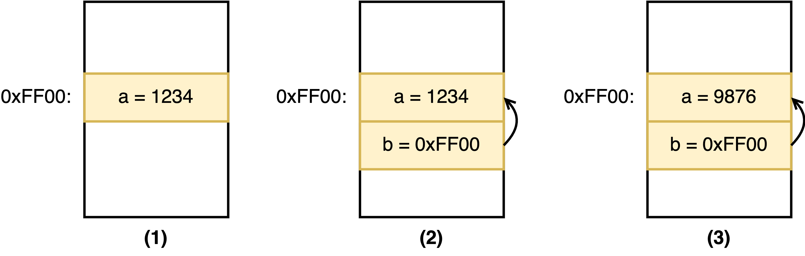

CTF of C Programming
Throughout the class, we’ll be heavily relying on the low-level C and C++ languages. Using C and C++ allows us to manipulate the hardware at a very fine granularity, allowing us to pull off very powerful microarchitectural attacks in later labs. This is in contrast with higher-level languages, such as python, which make reasoning about the exact instructions executed by a program difficult.
In this recitation we’ll primarily focus on learning how to write code in C, since C++ is a superset of C’s syntax (with limited exceptions). x
Table of Contents
- Crash Course
- Pointers
- Commonly Used Data Structures
- Useful for the Cache Lab
- Useful for Rowhammer Lab
- Capture the Flag (CTF)
Crash Course
We’ll first walk through a quick code example to get you familiar with the format of C.
#include <stdio.h>
#define MAGIC_NUM 5
void sayHello(int helloNum) {
printf("Hello World! The addition sum is: %d\n", helloNum);
}
int main(void) {
int result = 1 + MAGIC_NUM;
sayHello(result);
return 0;
}
A few things to note about this code:
#includeand#defineare pre-processor directives, which are resolved prior to compilation.#includetells the pre-processor to include the contents of the listed file (e.g.stdio.h) when compiling this file.#definetells the pre-processor to replace all instances of the listed term with the following value (e.g.MAGIC_NUMis replaced with5everywhere in the code prior to compilation)
- C is a relatively strongly typed language, especially compared to Python, requiring variables to be explicitly declared with their type (e.g.
int). printfprints a message to console. You can include variables in your printout by including a format specifier such as%dfor integers.- Warning:
printfis fairly heavy duty, so be cautious when calling it when measuring microarchitectural behaviours!
- Warning:
Pointers
Declaration, Address-of, Dereference
An extremely powerful tool used in C programs to interact with memory are pointers. Pointers are variables that contain a memory address, rather than a value directly.
void example_method() {
int a = 1234; // (1)
int *b = &a; // (2)
*b = 9876; // (3)
}
In this code, we declare an integer variable a and assign value 1234 to it. Next, we decleare a pointer variable, name it b, and assign the address of a to it, meaning we make pointer b points to the location of a.
Let’s first understand three pointer-related operations.
- Pointer declaration: To declare a pointer and give it a name, you need to use the type written as
int *. More generally, it is written as the target data type followed by a star, such aschar *,void *, etc. In the code above, we define a pointer namedband tell the compiler that it points to an integer. - Obtaining address: Every variable in C is stored in a location in memory, and thus each of them has an address. We use
&to obtain the address of a variable, and&is called the address-of operator. As shown, we obtain the address of the variableaby writing&a. - Dereference a pointer: Given a pointer, we can read or write the location pointed to by the pointer by dereferencing it. As shown, we write to the location pointed to by
bby writing*b = 9876. Becausebpoints toa, so after executing the last line of the code, if you read variablea, you will see it is now equal to 9876.
Pointer declaration vs. Pointer dereference
Pointer declaration and pointer dereference both involve using the
*notation. Make sure you understand what the*means each time you see it. For example,int *b = &a;is the same asint *b; b = &a;. Here,*means pointer declaration, and the assignement (i.e.,=) initializes the pointer, NOT the value that the pointer points to.
Next, let’s visualize the memory layout for the code above so you can get a better view. Reach to the course staff if you find the figure below difficult to understand.

Casting
Occasionally you may be required to change the data type of a variable. For instance, you may want to access a specific address at a given 64-bit integer value. To do this, you can cast a variable into another as such:
void example_method() {
uint64_t x = 0x12345678; // x is a 64-bit unsigned integer
uint8_t *y = (uint8_t *) x; // change the type of x to make it a pointer (treat it as an address)
uint8_t z = *y; // access the data pointed to by pointer y.
// z now contains the data from address 0x12345678
}
A Pointer Points to Another Pointer
We can define a pointer that points to a location that holds another pointer.
int a = 1234;
int *b = &a;
int **c = &b;
In the code above, int ** should be interpreted as (int *)*, meaning a pointer that points to a location holds a int *, which is also a pointer. You can dereference the pointer c in two ways. In both cases, val will be 1234.
int val = **c;int* ptr = *c; int val = *ptr;
Commonly Used Data Structures
Arrays
C arrays are much like arrays in other languages!
void example_method() {
int a[2]; // array declaration
a[0] = 0;
a[1] = 1; // access array element like in other languages
printf("The first element of a is: %d\n", a[0]);
printf("The second element of a is: %d\n", a[1]);
printf("The first element of a is: %d\n", *(a)); // treat the array identifier as a pointer
printf("The second element of a is: %d\n", *(a + 1));
}
Observe that the array variable (i.e. a) is just a pointer to the first element in the array (remember that C arrays start at 0). Specifically, ptr[index] treats ptr as an array and retrieves the entry at index index. This is the same as *(ptr+index).
Pointer arithemetic operation under the hood
In
a[1]and*(a + 1), the value1does not mean 1 byte. Instead it means 1 element.For example, if
ptrpoints to address0xFF00, then which address doesptr+1point to? The answer is not0xFF01. Instead it should be0xFF00 + sizeof(int) = 0xFF04, as the size of anintis 4 bytes. Under the hood, the compiler is doing the pointer arithemetic computation for us by converting the 1 to 4 bytes based on the pointer type.
Cheatsheet for Pointer size and Data Size
int: 4 byteschar: 1 byteuint64_tmeans 64-bit unsigned integer: 8 bytes.- a pointer (
int *,char *,void *): depends on your machine. On a 64-bit machine, no matter what data type it points to, a pointer is 64 bits, i.e., 8 bytes.If you incur a new data type and want to find out its size, you can
printf("the size is: %lu\n", sizeof(x))wherexis the variable with the data type that you want to query about. Note that, when you cast a pointer, the address this pointer points to does not change, but the size may change, and the meaning of the associated arithemetic operation will also change.
Strings
In memory, a string of “Hi!” looks like this
| Address | 0x0 | 0x1 | 0x2 | 0x3 | 0x4 | 0x5 |
| Data | ‘H’ | ‘i’ | ’!’ | ‘\0’ | - | - |
In C, strings are just character arrays in disguise!
void example_method() {
char string[6] = "Hi!";
printf("String stored: %s\n", string);
// Print it character-by-character
int i = 0;
while(string[i] != '\0') {
printf("Character %d of string: %c\n", i, string[i]);
i++;
}
}
Since a string is encoded as a fixed length array (e.g. 6 characters in our case), we need a way to indicate the end of the text. We use the null terminator (e.g. 0x00) to denote the end of the string (this is automatically inserted for you when you write “Hi!”).
The above character-by-character code is actually quite dangerous! Think about what happens if you accidentally forget the null terminator here.
Useful for the Cache Lab
Dynamically Allocated Memory
You may have noticed that we were statically sizing our data structures in the previous sections. Sometimes you may want to allocate a dynamic amount of memory at runtime. This can be done using malloc() and free():
void example_method() {
int *array = malloc(2*sizeof(int)); // request a region that can hold 2 `int`
if (array == NULL) {
printf("malloc failed! \n");
return -1;
}
array[0] = 1;
array[1] = 2;
free(array); // return the memory region so others can resue it
}
On success, malloc returns a pointer to the beginning of some newly allocated memory. To avoid a memory leak, make sure to deallocate dynamically allocated memory regions after you’re done with them using free().
Useful for Rowhammer Lab
For later labs in the course, some advanced knowledge of C/C++ constructs may be required. We list some notes below for your reference.
C++ Maps (std::map)
C++ is a slight departure from C – it is a higher-level multi-paradigm programming language which shares a majority of its syntax with C, and is quite interoperable with C (apart from some minor exceptions).
C++ maps are very similar to Python dictionaries, with key-value pairs being assigned in a very similar fashion. A full description of this data structure can be found here.
An example of using C++ maps is shown below.
std::map<uint64_t, uint64_t> cpp_map;
uint64_t key = 0xDEAD;
uint64_t value = 0xBEEF;
// Add or modify a key-value pair
cpp_map[key] = value;
// Retrieve a value for a key
uint64_t key2 = 0xBAAD;
uint64_t value2 = cpp_map[key2]
if (value2 == 0){
assert("Key does not exist!\n");
}
Capture the Flag (CTF)
With knowledge of these constructs, let’s try some CTF challenges! Check Piazza Post to get started.